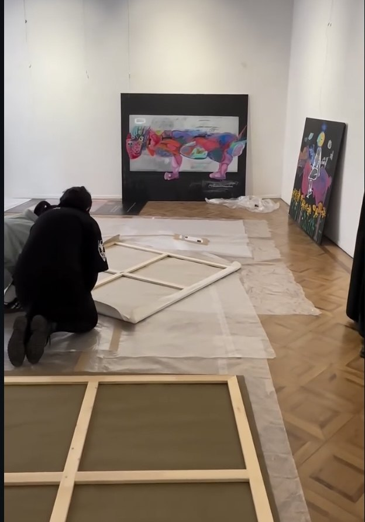

Арарат Саркисян
Alla ricerca del ParadisoПерсональная выставка и мастер-класс в Палаццо Пизани Реведин, Кампо Манин, Венеция.
26 октября – 5 ноября 2023
Ереван · с 2012 года
Галерея «Антикян» собирает в своём ереванском зале ведущих мастеров современной армянской живописи, графики и скульптуры и представляет их зрителям в Венеции, Тбилиси и других городах.

О галерее
Галерея основана в 2012 году арт-экспертом Армине Антикян. Это дом для современного армянского искусства и его авторов.
С момента открытия галерея организовала более двадцати групповых и персональных выставок в Армении и за рубежом. Помимо традиционных музейных и галерейных площадок, она часто выбирает альтернативные пространства для событий и выставок современного искусства.
Галерея представляет художников, работающих в живописи, графике, скульптуре и инсталляции. Она также представляет в Армении ряд зарубежных авторов, среди которых итальянский художник Бруно Бруни.
Основательница
Армине Антикян основала галерею и руководит ею как куратор и художественный руководитель, определяя программу в Ереване и выставки армянских художников за рубежом.
Армине Антикян · Основательница, куратор и художественный руководитель
Из галереи
Живопись, графика и скульптура, представленные в галерее. О наличии и ценах спрашивайте у нас.
Бруно Бруни, бронза
Мы представляем
Самые известные имена современного армянского искусства и приглашённые авторы из-за рубежа.
Список неполный. Полный состав и доступные работы уточняйте в галерее.
За пределами Еревана
Галерея регулярно организует выставки армянских художников за пределами Армении и знакомит армянского зрителя с зарубежными авторами.
Персональная выставка и мастер-класс в Палаццо Пизани Реведин, Кампо Манин, Венеция.
26 октября – 5 ноября 2023

Персональная выставка в Палаццо Пизани Реведин, Венеция.
28 марта – 22 апреля


Адрес и контакты
Понедельник – суббота
12:00 – 18:00